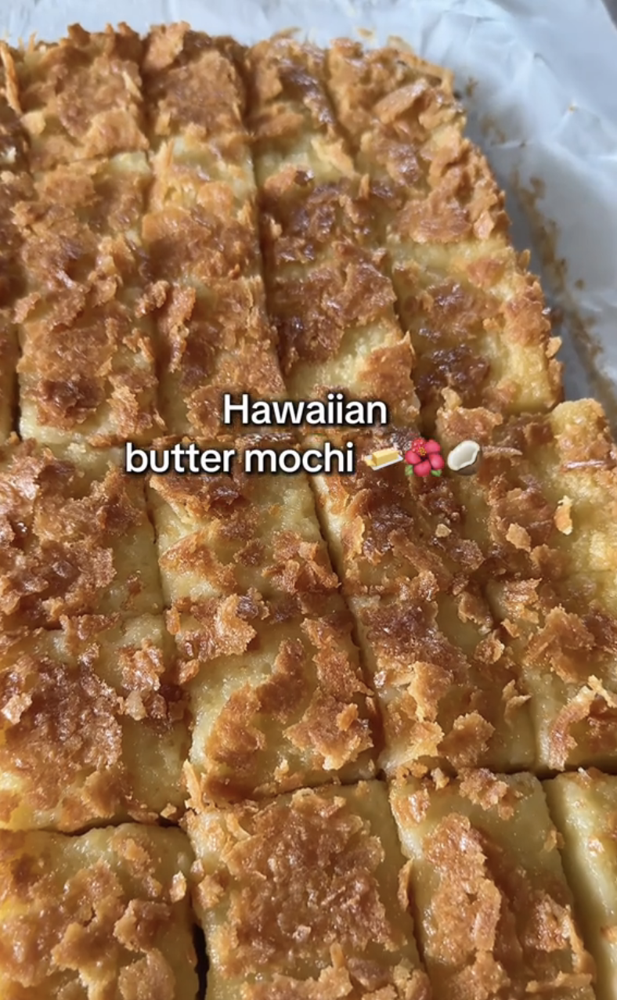

Home
Hawaiian Butter Mochi Recipe
credit:
@kaylainthekitchen on
Tiktok

Ingredients
- 16 oz glutinous rice flour
- 2 cups granulated white sugar
- 1 tsp baking powder
- 1 can coconut milk
- 2 cups whole milk
- 4 eggs
- 2 tsp vanilla extract
- 1/2 cup melted butter
- shredded coconut (optional)
Instructions
- Preheat oven to 350 degrees fahrenheit
-
In a medium bowl, combine the glutinous rice flour, sugar, and baking
powder
-
In a large bowl, combine the coconut milk, whole milk, 4 eggs, and
vanilla extract
- Slowly incorperate the dry mixture into the wet
-
Whisk in the melted butter—the batter should be smooth and thin with no
clumps
- Pour the batter into a parchment lined 9x13 baking dish
-
Sprinkle with shredded coconut (optional, but highly recommended for
that crispy top!)
- Bake for 1 hour and 5 minutes
- Let cool for at least an hour before serving